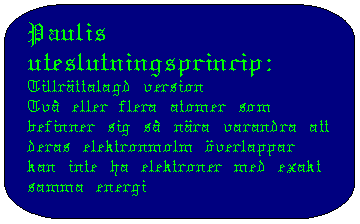
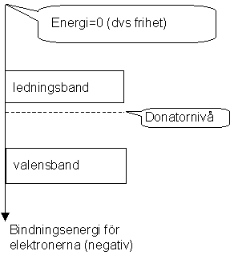
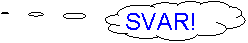
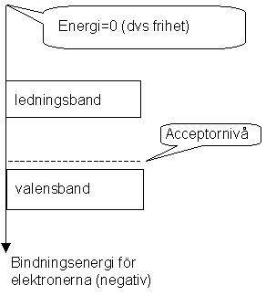
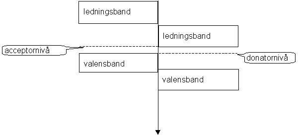

Optiska halvledarkomponenter
Detta kapitel inleds med en genomgång av bandmodellen och dopade halvledare. Känner man med sig att man kan detta bör man hoppa direkt till de optiska tillämpningarna.
När vi
beskrev hur ljus och materia växelverkade i kapitlet om om lasern använde vi en skalmodell som åtminstone närmar sig sanningen för hur ljus bildas och förstörs i en gas. I ett fast ämne är emellertid situationen en helt annan vilket beror på något som kallas Pauli's uteslutningsprincip. Denna gör att i ett fast ämne kommer varje energinivå (=kemisternas skal) att delas upp i mycket tätt liggande nivåer. I princip en nivå för varje atom. Detta gör att vi för en normal fysisk klump materia ( med kanske 1020 - 1030 atomer) kommer att få energinivåerna samlade i band ungefär där skalen låg i de ensamma atomerna.. Detta gäller bara de skal som verkligen kommer i kontakt med varandra, dvs inte de innersta. De som är mest intressanta optiskt är det yttersta som är befolkat vid låg temperatur och det innersta som är i pricip tomt vid låg temperatur. De band dessa ger upphov till kallas valensband och ledningsband.Förbehåll för författarens goda samvete .
I en ledare är valensbandet fullt och ledningsbandet halvfullt vilket leder till att elektroner som befinner sig i ledningsbandet kan röra sig utan att behöva ändra energi särdeles mycket. Ett yttre pålagt elektriskt fält gör att vi får en potentialbacke i ledningsbandet, som har sin lutning så att elektronerna rör sig från plus till minus. (Detta innebär att de rör sig uppför potentialbacken, de är ju negativa).
En isolator däremot har ett fullt valensband och ett tomt eller så gott som tomt ledningsband. även i detta fall kommer ledningbandet att bilda en backe, men tyvärr finns det inga åkare i denna. I valensbandet finns laddningar men dessa kan inte röra sig eftersom det inte finns några lediga platser att glida till. Inte heller kan man vid den yttre pluspolen bilda lediga platser (s.k. hål), eftersom de elektroner som ligger där skulle behöva tillföras energi för att ta sig upp till den yttre ledarens ledningband. Den enda elektroner som kan leda ström är det fåtal som kan ta sig upp till ledningbandet pga av atomernas värmekollisioner eller liknande händelser. Vid rumstemperatur är emellertid avståndet mellan underkant på ledningbandet och överkant på valensbandet (=bandgapet) så stort att antalet som tar sig upp är försumbart. Om bandgapet är mindre är inte materialet en isolator utan en halvledare. Ett annat sätt att få materialet ledandet är att lägga på en stor spänning att den är tillräcklig för att dra elektronerna upp ur isolatorns valensband. Populärt kallat överslag och inte så trevligt.
Bandgapets storlek är också direkt relaterat till materialets optiska egenskaper. den våglängd som enligt l =c/f motsvarar bandgapets energi är en gräns mellan de våglängder som transmitteras genom materialet (längre) och de som absorberas (kortare). Vanligt glas har alltså ett bandgap som motsvarar, vilken våglängd? >!!<
En halvledare är egentligen bara ett specialfall av en isolator
(och alltså inte av en ledare fast det låter så) nämligen med bandgap som är så litet att elektroner redan vid rumstemperatur i nämnvärd utsträckning (vad nu det är?) tagit sig upp i ledningsbandet pga värme. I praktiken innebär detta en bandgap vars motsvarande våglängd ligger i IR, vilket vi behandlar senare .Nu är det bara det att de halvledare som förekommer i optiska sammanhang är inte rena utan dopade, vilket naturligtvis har sina konsekvenser.
Dopning förekommer av två typer: p-dopning och n-dopning. Innebörden förklaras lättast med ett exempel:
N-dopning
Innebär att ämnet i fråga är uppblandat med (i mycket små koncentrationer) ett ämne med fler elektroner i sitt yttersta skal än värdmaterialet. Exempel är kisel dopat med fosfor. En snabb titt på periodiska systemet avslöjar att kisel (Si) har 4 elektroner i sitt yttersta skal, medan fosfor (P) har fem. Eftersom fosforatomerna nu är så mycket färre (dopning mäts i ppm) kommer materialets elektronstruktur att bestämmas av kisel, dvs den bandstruktur vi har är i princip kisels. Dock måste de stackars elektroner som härstammar från fosforatomerna vara någonstans. Dessa kommer i allmännhet att bilda en extranivå strax under ledningsbandet. "Platserna" i denna nivå är lokaliserade till de respektive fosforatomernas närhet, vilket innebär att de elektoner som befinner sig där innte kan flytta sig utan att ta sig upp till ledningandet. (Dopatomerna ligger så långt ifrån varandra att deras elektronmoln inte överlappar). Denna nytillkomna nivå brukar kallas donatornivå. Eftersom avståndet mellan denna och ledningsbandet är relativt litet kommer en stor del av donatorelektronerna att befinna sig ledningsbandet pga värme redan vid rumstemperatur. Materialet leder alltså ström tack vare närvaron av (NNNNegativa) eletroner i ledningbandet. Därav namnet.
Bara en viktig kontrollfråga: Vilken laddning kommer en klump av N-dopat material att få (plus, minus eller neutralt)?
P-dopat
Sedan kan man göra det lätt för sig genom att säga att p-dopat är tvärt om, men det är nog inte hela sanningen. Ett exmpel på p-dopat material är aluminium dopämne i kisel som värdmaterial. Aluminium har tre elektroner i sitt yttersta skal vilket innebär att varje Al-atom har "plats" för en extra elektron. Dessa platser (som alltså från början är tomma) kommer att bilda en nivå som ligger strax över valensbandet och kallas acceptornivå. På samma sätt som elektroner inte kan flytta sig i donatornivån i n-dopade halvledare kan de inte flytta sig här heller. Pga av det lilla energiavståndet mellan valensband och acceptornivå kommer en stor del av acceptorplatserna att fyllas av elektroner från valensbandet. Dessa kan som sagt inte röra sig, men däremot kan de lediga platser som uppkommer i valensbandet flytta sig. Dessa uppträder då som om de vore PPPPositiva laddningar och kallas hål.
(Egentligen är det naturligtvis även i detta fall elektroner som rör sig, men i stället för att försöka beskriva den kaskadprocess som uppstår då en rörlig plats flyttar sig genom en massa elektrooner beskriver vi rörelsen av ett hål.)
Inte heller ti detta fal är materialet laddat utan den elektron som fattas i varje aluminiumatom motsvaras av en positiv laddning mindre i kärnan.
Mobilitet
Hål och elektroner brukar kallas laddningsbärare. Dessa har olika rörlighet i olika situationer. Här ska vi bara konstatera att elektroner inte kan röra sig alls i p-dopat material, eftersom de där bara faller ner i existerande hål och gör materialet negativt (!!!) laddat, vilket stöter bort ytterligare elektroner. Inte heller kan hål röra sig i n-dopat material eftersom de omedelbart fylls av elektroner från donatornivån och blir positivt laddade, vilket i sin tur stöter bort ytterligare hål.
Det riktigt intressanta inträffar nu om vi låter p- och n-dopat material komma in kontakt med varandra, dvs den så kallade PN-övergången.
I kontaktytan mellan p och ndopat material kommer elektroner från den ndopade sidan att vinna energi på att falla ner i hål på den p-dopade. Detta kommer att höja den potentiella energin för elektroner på den p-dopade sidan (som nu blir negativt laddad) och sänka den för den n-dopade. Detta ger oss in i själva övergången inbyggd potentialskillnad som är ansvarig för många av de egenskaper den har.
Lysdioden
I en lysdiod är den p-dopade sidan ansluten till yttre plus och tvärt om. Detta medför elektroner injiceras i det n-dopade materialet och hål i det p-dopade. det yttre fältet drar nu bägge mot övergången och vi noterar att de befinner sig i den materialtyp där de kan röra sig bra. När de kommer fram till gränsen rekombinerar de, dvs elektroner från n trillar ner i hålen från p. De vinner energi på att göra det (trots vad som sas ovan därför att (Håll tungar rätt i mun nu!): N-sidan som är ansluten till minus sjunker i potential, dvs stiger i potentiell energi för elektroner (potential är potentiell energi per positiv laddning). På P-sidan blir det tvärtom dvs banden sjunker. När nu elektroner och hål rekombinerar frigörs energi, som kan komma i form av ljus. Om ingetting speciellt gjort för att förhindra detta kommer ljuset snabbt att återabsorberar och vi observerar ingenting annat utifrån. Om vi däremot givit fotonerna en flyktväg, genom att skapa en sådan geometri kommer vi att kunna observera ljuset. Ett exempel på sådan geometri utgörs av lysdioden.
Till
innehållsförteckningenTill
nästa kapitel (vågoptik)